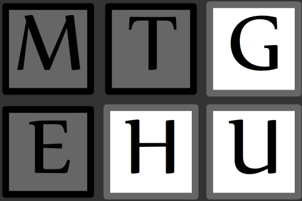
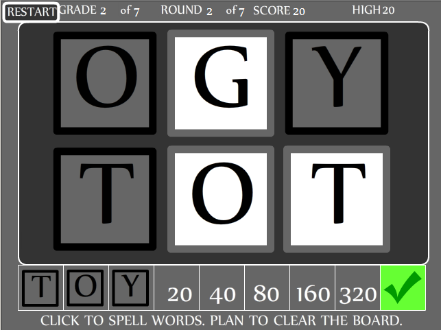
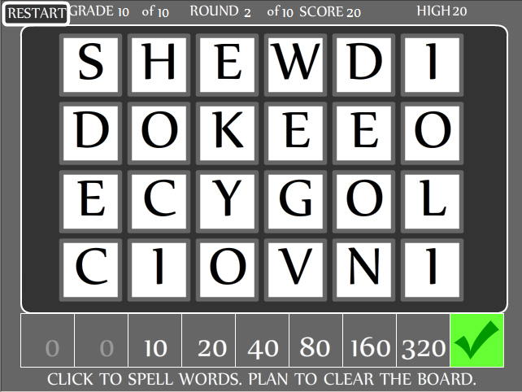

HURDLE HERO Press a key to jump varying hurdles. Win the race. Missing a hurdle slows you down.  Can you win the regionals?  Can you win the Olympics?  To cheat to a higher competition, click the level number and then click Restart. A one-day game by Ethan Kennerly (February 23, 2014) Inspired by Hurdle Champion on iPhone, Speed Match on Lumosity, and Interactive Metronome.